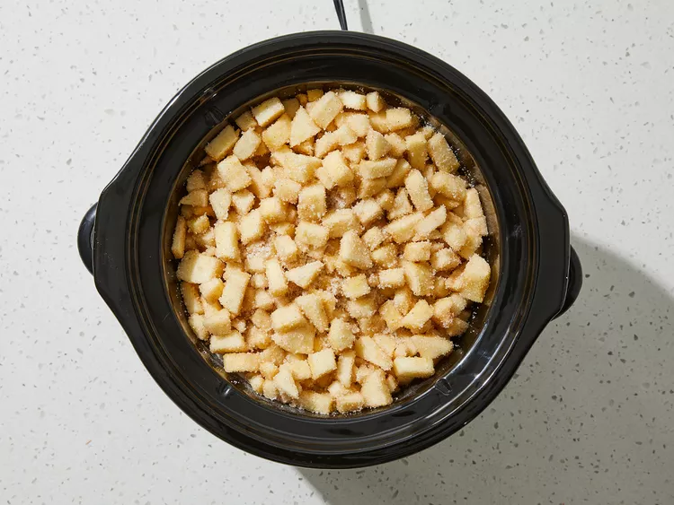
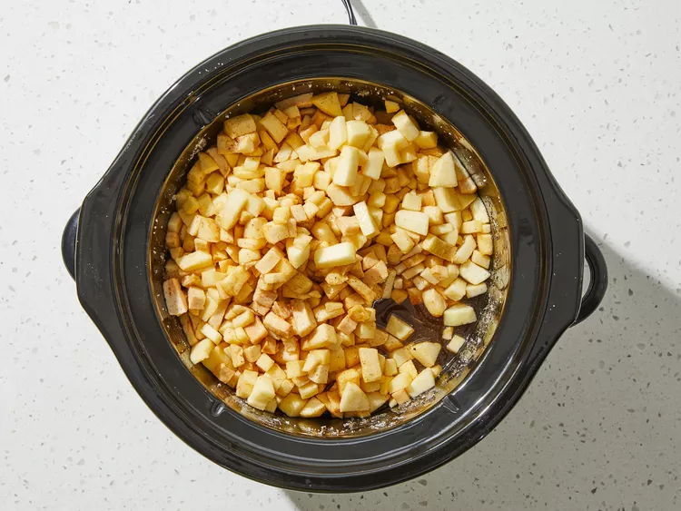
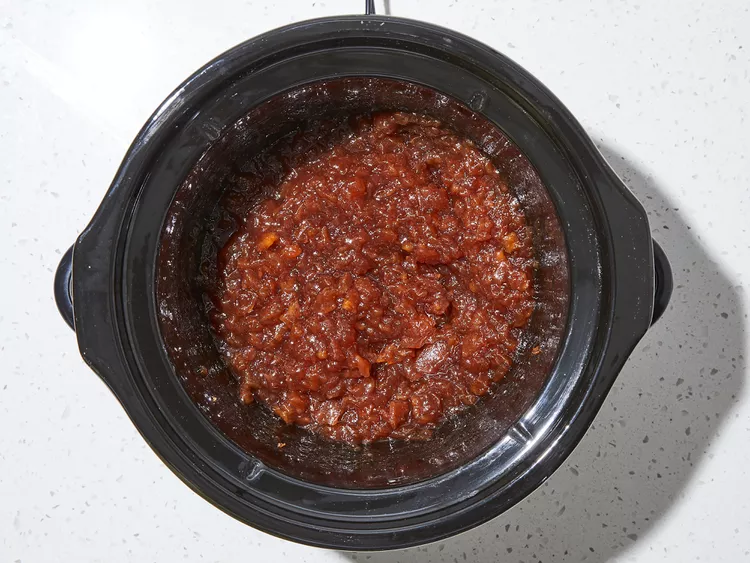

This apple butter recipe cooks apples, sugar, and spices real slow but it's well worth the wait.
Step 1
Place apples in a slow cooker. Mix sugar, cinnamon, cloves, and salt in a medium bowl; pour over apples and mix well.
Step 2
Cover and cook on High for 1 hour.
Step 3
Reduce heat to Low and cook, stirring occasionally, until mixture is thickened and dark brown, 9 to 11 hours.
Step 4
Uncover and continue cooking on Low for 1 hour. Stir with a whisk to increase smoothness if desired.
Step 5
Spoon mixture into sterile containers, cover, and refrigerate or freeze.